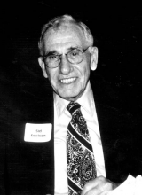

Please note: the AAS Obituaries are temporarily being hosted on this website while their full content is being ingested into the PubPub publishing platform newly adopted by the Bulletin of the American Astronomical Society. When the migration is complete, your existing links will take you to the final, migrated content. Contact peter.williams@aas.org with any questions.
Sidney Edelson (1916-2002)
On 24 March 2002, the solar physicist Sidney Edelson died in Santa Barbara, California. Sidney was born in Brooklyn NY on 24 August 1916 to Benjamin and Sarah Edelson. His father worked in the garment industry. He obtained his BA from Brooklyn College (1938) and a MA from New York University (1949). He entered Georgetown University in 1950 and received both a MA (1953) and PhD (1961). His PhD thesis was entitled ``A Study of Long and Short Term Variations in Solar Radiation at Radio and Optical Wavelengths."
When the U.S. entered World War II, Sidney enlisted as an apprentice seaman and retired as a Lt Commander. He was active in both the European and Pacific theaters. He was captain of a minesweeper in the northern Atlantic and commanded a LST vehicle landing troops at Normandy on Omaha beach. Later on, he was part of the amphibious forces that landed the 5th Marine Division at Okinawa. After the war, he commanded the USS Typhon repatriating Japanese POWs from China to Sasebo, Japan. For this, he was given a certificate of appreciation by Chiang Kaishek.
After the war efforts, he served in 1946-47 as a port captain for the China Waterways Transport in Shanghai. It was at this time that he met and married Erny Margaret Anderson, a surgical nurse. They were unable to have children because of a bayonet wound suffered by Erny during a 1937 Japanese attack upon the Catholic Mission hospital where she was working.
The majority of his research work was in the area of solar physics; he noted the time relationships between centimeter wavelength bursts and Halpha solar flares (1959), studied the short term variations in the solar radiation at radio and optical wavelengths (1961), observed the solar flux variations at mm and cm radio wavelengths (1973), and pointed out the close association of the emission features at 9 and 3.3 mm with the solar magnetic field structure (1973).
Sidney's professional career included research work on solar physics at a number of institutions including the U.S. Naval Observatory (1948-56), the U.S. Naval Research Laboratory (1956-1964), NASA Ames Research Center (1964-1972) and the University of Graz Austria (1972-1974). During the period 1975-1985, he acted as a consultant for solar energy initiatives and in 1978-1981, he served as a volunteer science advisor for Congressman Robert Lagomarsino in Santa Barbara California. Upon the death of his wife Erny in 1992, he endowed two Erny Margaret Edelson memorial scholarships at Santa Barbara City College, one in nursing and one in radiography. In honor of Carl Sagan, he endowed a third scholarship in planetary sciences. Also in honor of his wife, he donated ancient works of Chinese art to the Santa Barbara Museum of Art.
One of the activities for which he was most proud was his support, at Ames, of the Apollo 11 lunar landing mission, an activity for which he received an Apollo Achievement Award. He had both a distinguished military career and a successful scientific career. Sidney's siblings are his brothers Leon and Jack Edelson and his sisters, Edith Caballero, Dr. Terry Smolar, and Sophia Forman (now deceased).
Photo courtesy of Edith Caballero
Obituary written by: Donald K. Yeomans (Jet Propulsion Laboratory/Caltech)
BAAS Citation: BAAS, 2003, 35, 1459
SAO/NASA ADS Bibcode: 2003BAAS...35.1459Y